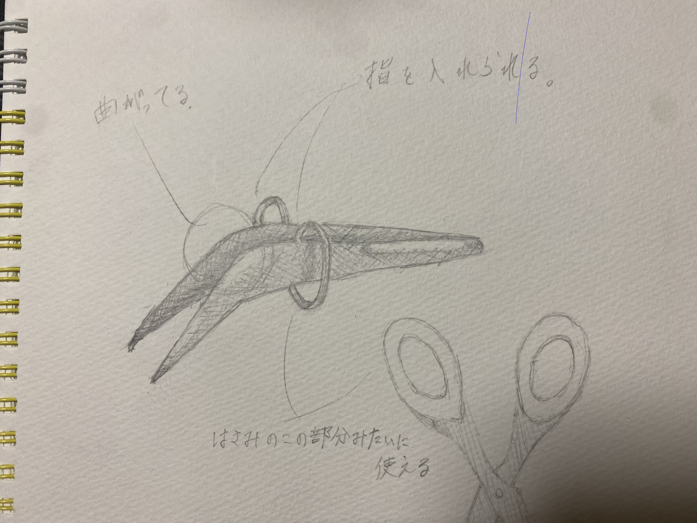

指を動かすだけで掴めるピンセット

stlファイル
このピンセットは横に付いている丸い部分に指を通して使うことができます。
そうすることで、ピンセットをしっかり持ってなきゃいけないと言うことを気にせず使うことができると思ったので作ってみました
また、今までのピンセットでは形の性質上内側に摘んで掴む動きしかできなかったのに対して、このピンセットは丸い円の部分がハサミの
指を入れるところのような働きをしてくれて、少し大きいものでもピンを外側に開くことで掴むことができます。

今回の３Dプリントでは丸い円の部分が細すぎてうまくうまくできなかったので、3Dプリントで作るときは
もう少し、太くする必要があると思った。